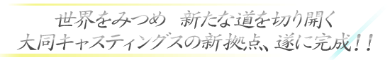
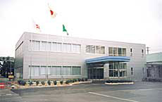
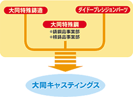

TOP >> TOPICS
大同キャスティングス 新社屋完成

|  |
2002年4月に誕生した大同キャスティングスに、発足から4ヶ月の月日を経て、この度、新社屋が完成しました。 「“永年の経験”と“新しい技術”を活かし、世界に向けて新たな道を切り開く」という強い決意のもと邁進する大同キャスティングスの、新生と決意のシンボル“DCC新社屋”へのご来場を心からお待ちしております。
世界に輝く技術と品質 大同キャスティングス期待の船出！！
自動車部品などグラムオーダーの精密鋳造品から、発電設備など大型インフラ用のトンオーダーの砂型鋳造品に至るまで、大同グループの鋳造品事業は、特殊鋼鋳造の全領域をカバー。高い評価と信頼性を得て、内外のシェアにおいても優位に立っています。そして、今後より一層の技術強化と経営効率化による競争力を確保するため、大同特殊鋼の鋳鋼品事業部と精鋳品事業部、関連会社であるダイドープレシジョンパーツと大同特殊鋳造を統合。2002年4月から、新しく（株）大同キャスティングスとして発足することになりました。
|  |
グループ内鋳造分野での豊富な実績、最新の技術・設備、高いシェアを誇る大同キャスティングスは、様々な産業分野に対応し、ユーザーニーズに最適な製品を提供できるよう、多彩な鋳造法を備えており、あらゆるサイズ、形状、材質の、高品質な製品を生み出すことが可能です。また、多様な小ロットニーズを満たしながら大量生産にも対応するユーティリティー・プレーヤーとして、進化、多岐化し続けるこれからの特殊鋼ニーズを支えていきます。